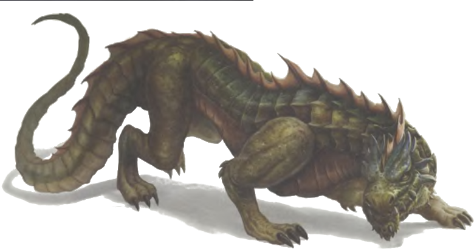

Draco de emboscada
Dragón mediano, no alineado
Armadura 13 (natural)
Puntos de vida 22 (4d6 + 8)
Velocidad 30 pies
| FUE | DES | CON | INT | SAB | CAR |
|---|---|---|---|---|---|
| 13 (+1) | 15 (+2) | 14 (+2) | 4 (-3) | 11 (+0) | 6 (-2) |
Habilidades Percepción +4, Sigilo +4
Resistencias a daños Veneno
Sentidos visión en oscuridad 60 pies, Percepción pasiva 14
Idiomas entiende dracónico pero no puede hablarlo
Desafío 1/2 (100 XP)
Tacticas de manada. El draco tiene ventaja en tiradas de ataque contra criaturas si al menos uno de los aliados del draco esta a 5 pies de la criatura y el aliado no esta incapacitado.
Ataque sorpresa. Si el draco sorprende a una criatura y la golpea con un ataque durante la primera ronda de combate, el objetivo recibe 7 (2d6) daño adicional del ataque
Acciones
Mordisco. Ataque con arma de mele: +4 a golpear, alcance 5 pies, un objetivo. Golpe: 4 (1d6 + 1) daño perforante
